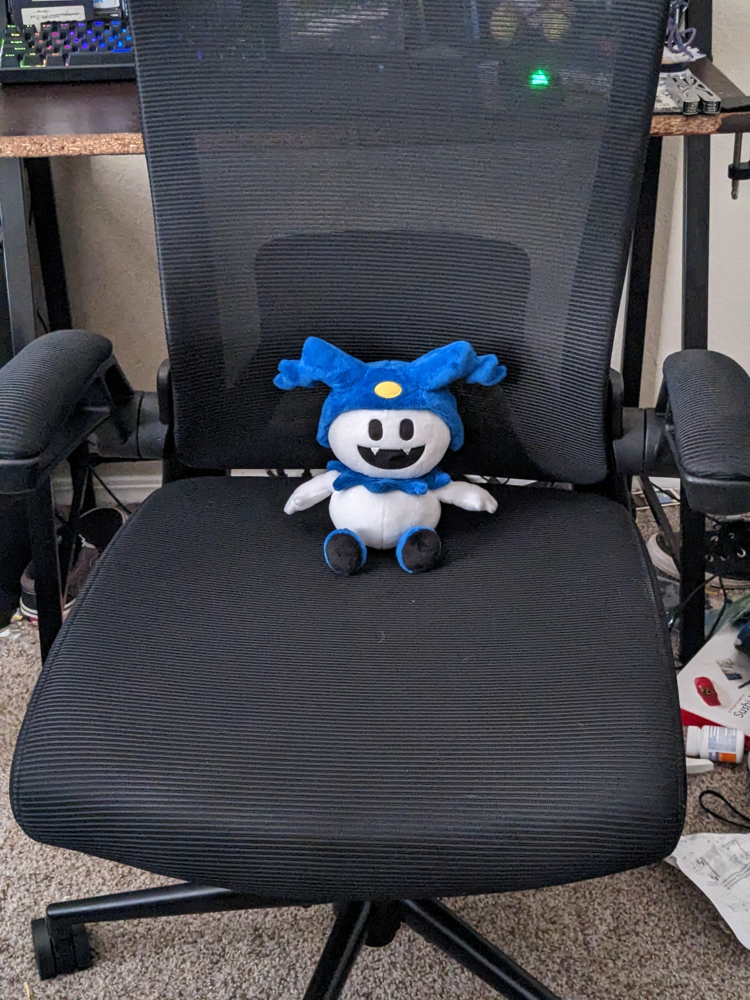
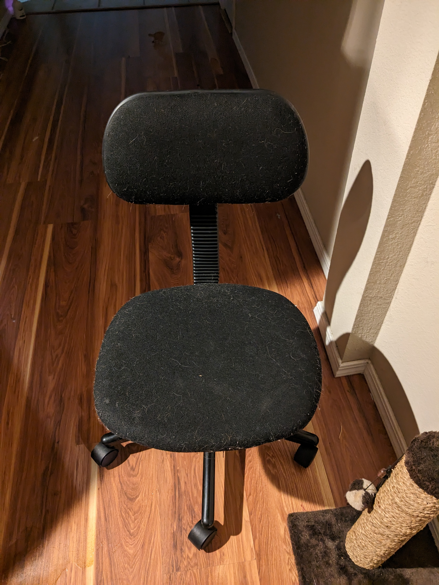
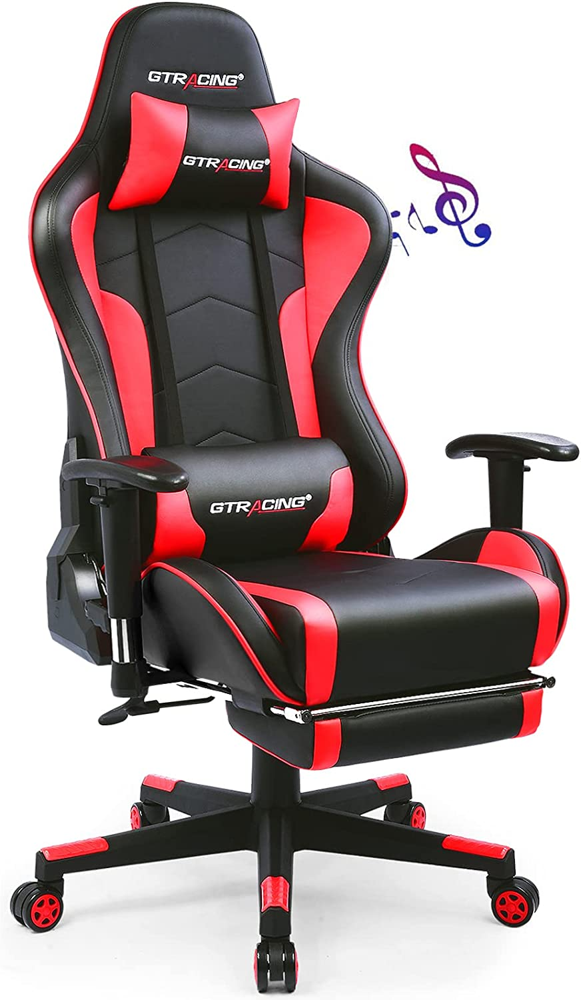
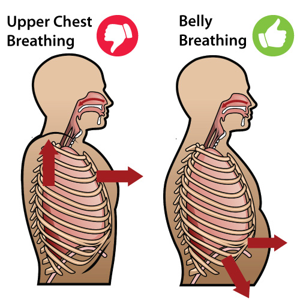
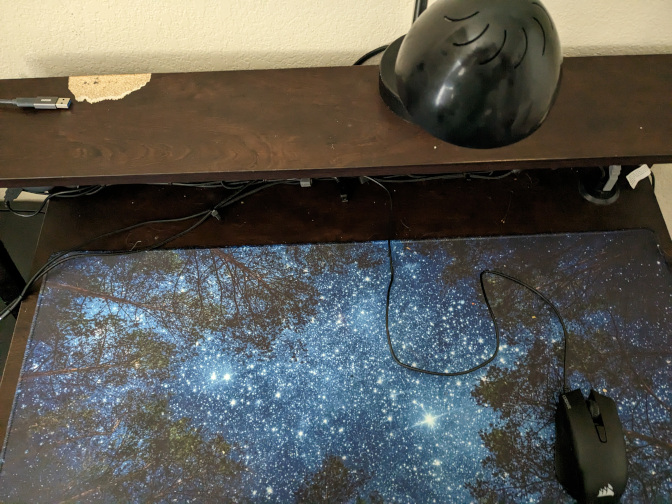
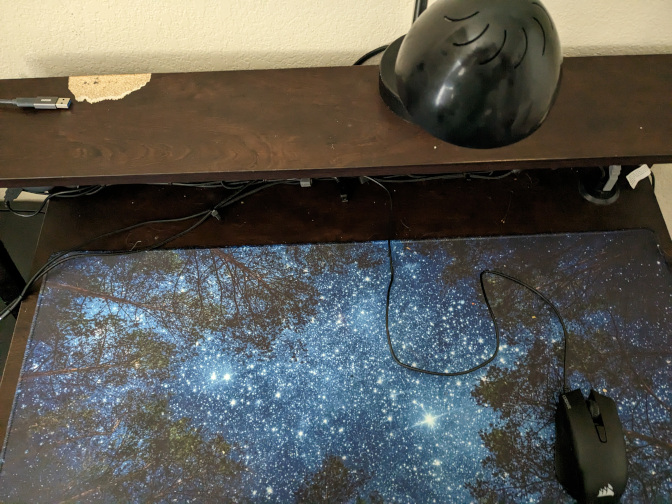
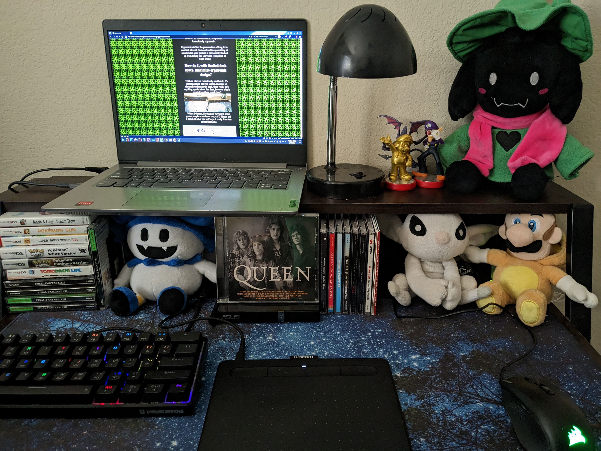

Chairs, Carpal Tunnel, and Creating the best environment for me
I recently got a new chair, and it made me start to think about ergonomics a lot more.
(Left is New Chair, Right is Old Chair)
Overall, it's great. The mesh back allows for a lot of airflow, there's fantastic back support, and there's also retractable armrests.For something that I got on deal for $30, I think it was more than a good bargain, especially compared to the Wish Chair From Hell that costs around the same.

However, I think that anything would be better than the Wish Chair, even those "gaming chairs" that are just race car seats on (smaller) wheels
Gaming chairs are NOT good!
Here's why!
Gaming chairs, because they take direct inspiration off of racing car seats, or bucket seats, they are designed to preserve a human in the case of a crash.They are designed to protect against large and sudden G-Forces, not for comfort or even for ergonomics.
Bucket seats are designed so that you would tense up, especially around your shoulders, when mixed with the chest breathing technique, which a lot of people don't even know is a terrible way to breath, means that you are making yourself more and more uncomfortable just by sitting on a chair.

Ergonomics VS Comfort, A Battle of Frenemies
Everytime the topic of Ergonomics comes up, there is a slight contradiction in how Ergonomics and Comfort are explained.Ergonomics is not a synonym for comfort. I'd rather think of Ergonomics in the analogy of Weather VS. Climate.
Weather is short-term, while Climate is long-term. In a similar vein, Comfort is short term, while Ergonomic is long term.
An ergonomic setup can be uncomfortable, however an uncomfortable setup is not immediately ergonomic.
Ergonomics is like the preservation of long term comfort. afterall, You can't really enjoy sitting at a desk when your posture is permanently fucked up from sitting like you're the Humpback of Notre Dame.
How do I, with limited desk space, maximize ergonomic design?
Truth is, I have a ridiculously small desk. It's dimentions are 31x18.5 inches, and sans an elevated platform at the back, there really isn't anything special about this desk, however what's creativity without restrictions? 
With a deskmat, Mechanical Keyboard, some games, maybe a plushy or two, a CD Player, and a bunch of other bits and bops, it really does start to feel like home.

Notice the large space between the mouse and the keyboard. This was intenionally done to prevent Carpal Tunnel, through minimizing as many intersections my arms have to deal with on a regular basis.
The position of my laptop is a deliberate choice, as to prevent neckpain. Proper office ergonomics states that you shouldn't have to move your head down to look at your screen.

The elevated platform is simply a convienent alternative to the advised laptop stand in the diagram above
I find that comfort isn't just a physical state, but a mental state as well. If you're comfortable both physically and mentally, you will overall perform better at any task that you set yourself out to complete.